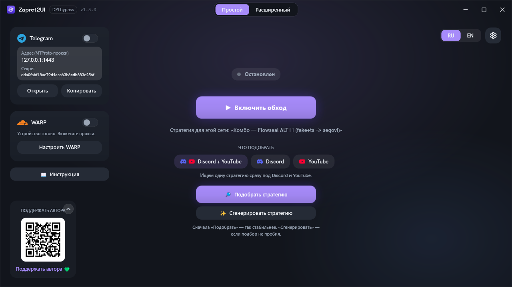

Документация Zapret2UI
Как устроен обход блокировок, как пользоваться программой и как собрать стратегию под своего провайдера.
Что это такое
Zapret2UI: приложение для Windows, которое управляет движком winws2 из проекта
bol-van/zapret2. Движок изменяет первые пакеты ваших
соединений так, что оборудование провайдера не распознаёт, к какому сайту вы подключаетесь, а сам
сервер получает всё правильно. Благодаря этому открываются Discord и YouTube, заблокированные по
имени сайта.
Сам движок настраивается длинными строками аргументов, и подобрать рабочую комбинацию вручную тяжело. Программа берёт это на себя: девять готовых стратегий, автоматический подбор, генерация личной стратегии под вашу сеть, диагностика и встроенный прокси для Telegram.
Это zapret2, а не обычный zapret. Движков два, и оба сделал один автор: первый
(winws), вокруг которого выросло большинство инструкций и сборок, и второй
(winws2), с которым работает эта программа. Форматы стратегий у них разные, и конфиги
от первого здесь не запустятся. Разбор различий и то, как отличить одно от другого:
Как это работает.
Первый раз здесь? Читать всё подряд не нужно. Откройте Быстрый старт: обычно хватает первых двух шагов. Вернётесь сюда, если что-то не заработает или станет интересно, как оно устроено.

Разделы документации
Восемь страниц, от «просто верните мне Discord» до написания собственных стратегий.
Как это работает
Теория без формул: почему блокировка вообще обходится и что именно делает движок с вашими пакетами.
- SNI и DPI
- разрезка
- фейковые пакеты
- fooling
- zapret2 против zapret
- чем это не VPN
Быстрый старт
Скачать, запустить от администратора, нажать кнопку. И что делать, если с первого раза не сработало.
- требования
- установка
- пять шагов
- подбор и генерация
- автозапуск
Интерфейс
Каждый экран программы со скриншотом: что делает кнопка, что означает цвет, куда смотреть при сбое.
- семь вкладок
- диагностика
- хостлисты
- прокси Telegram
- все настройки
- файлы на диске
Разбор стратегий
Девять встроенных стратегий построчно: что делает каждый аргумент и почему стратегия собрана именно так.
- общий скелет комбо
- разбор каждой
- чем они отличаются
- какую брать под симптом
Справочник
Формат аргументов winws2: всё, что нужно, чтобы написать свою стратегию и не получить код 87.
- структура команды
- глаголы desync
- fooling
- позиционные маркеры
- токены
- блобы
- оркестраторы
Если не работает
Порядок действий сверху вниз, коды выхода движка и разбор случая «в диагностике всё зелёное, а сайт не открывается».
- что делать по порядку
- частые ситуации
- коды ошибок
- частые вопросы
Поддержать
Как поддержать проект деньгами и чем можно помочь без них: обратная связь по провайдерам ценнее донатов.
- донат
- VPN от автора
- обратная связь
- задачи и звёзды
Благодарности
Все, на ком стоит программа, с указанием что конкретно откуда взято: движок, стратегии, прокси, метод проверки DPI.
- bol-van
- Flowseal
- hyperion-cs
- RaccoonLaptop
- шрифты
- лицензии
Где взять программу
Один файл Zapret2UI.exe на
странице релизов. Установка не
нужна, .NET ставить не надо. Движок докачивается при первом запуске и проверяется по контрольной
сумме SHA-256.
Нужны Windows 10 или 11 и права администратора: движок загружает сетевой драйвер в ядро. Для встроенного прокси Telegram администратор не нужен. Подробности в Быстром старте.
Другие источники
-
Официальный мануал движка
Полный справочник по
winws2от автора движка, на английском. Первоисточник по всем глаголам и параметрам. -
Репозиторий Zapret2UI
Исходный код, релизы и трекер задач. Там же файл
manual_zapret2UI.md: тот же материал, что здесь, одним документом для чтения офлайн. - Канал в Telegram Новости о версиях и обсуждение того, что у кого работает и у какого провайдера.
- Flowseal / zapret-discord-youtube Сборник рабочих стратегий для первого zapret. Часть встроенных стратегий здесь: переводы оттуда на движок второго поколения.